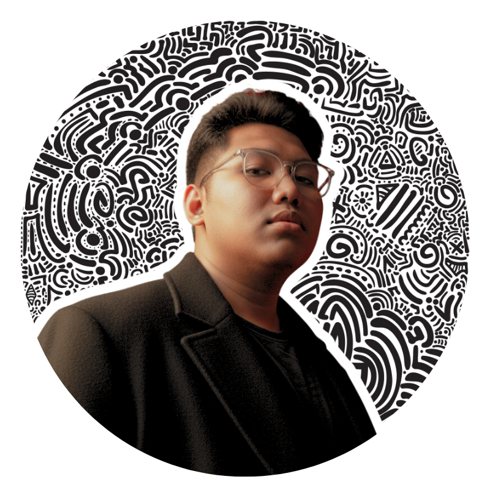
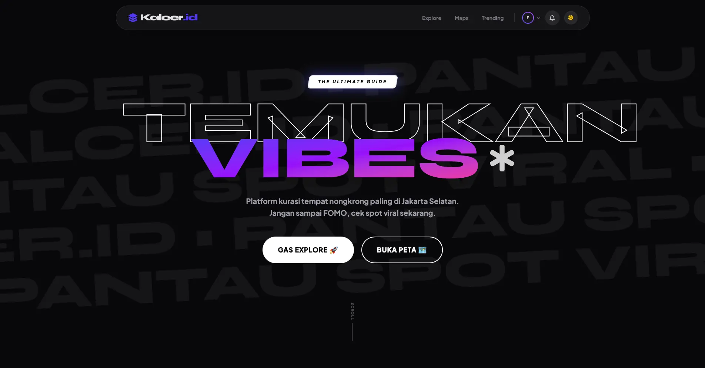
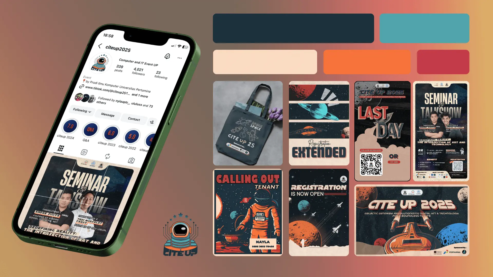

FARHAN
KHOLID.
UI/UX DESIGNER
crafting intuitive digital experiences


Background &
Philosophy
Who I Am
I am a UI/UX Designer and Front-End Engineer who specializes in translating complex user flows into seamless, intuitive interfaces. Currently studying Computer Science at Pertamina University, I bridge the gap between design fidelity and engineering precision.
With experience spanning product design, event branding, and front-end architecture, I bring a holistic approach to building digital products that both users and developers love.
Design Philosophy
Purpose-Driven UX
Every pixel must serve a purpose. I focus on solving real user problems, not just making things look pretty.
Systems Thinking
I build scalable design systems that maintain consistency and accelerate development cycles.
Premium Aesthetics
A memorable first impression matters. I craft vibrant, dynamic, and polished visuals that elevate the brand.
Selected Work
A curated selection of my most recent and impactful design case studies.
LuminaVisa
A Webisite concept simplifying opaque visa processes. Broken down into bite-sized steps with clear visual feedback to ease traveler anxiety.

Pilgrim's Tracker
Umrah and Hajj Management System Dashboard built to monitor pilgrim data and daily operations efficiently in real-time.

Kalcer.ID
A comprehensive cultural hub bridging fragmented heritage sites into one unified platform with dynamic event discovery.
Other Works & Archives

Mono Stock Dashboard
Monochromatic, high-contrast dashboard to reduce decision fatigue for traders.
VIEW WORK
CITEUP Event Branding
Visual identity for "Node of Connection". Applied across digital and print assets.
VIEW INSTAGRAMPT Farhan Surya Indah
Full-scale visual identities and promotional materials for umrah programs.
VIEW INSTAGRAMLet's Connect
Have a project in mind? Let's mold it together.